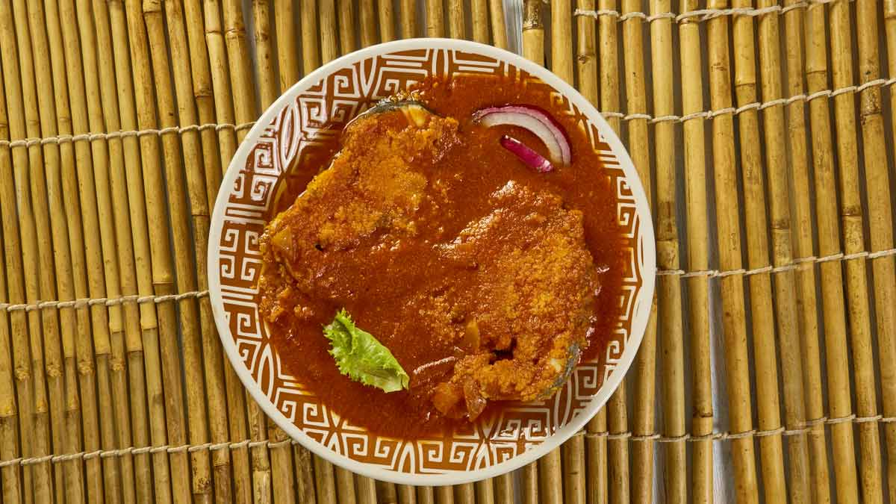
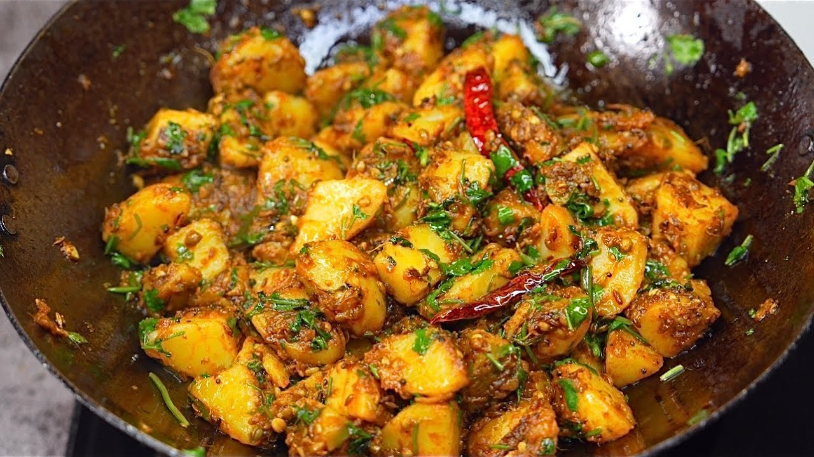

Flavours of India: A Culinary Journey
India's food is as diverse as its culture, with every region serving up unique flavors and traditions.
From spicy street food to royal feasts, vegetarian delights to coastal seafood, explore the rich and
colorful
tapestry of Indian cuisine that connects hearts through taste.
Taste of India – State by State
From the spice-laden streets of the South to the hearty platters of the North, every Indian state has
its own signature flavors and culinary traditions. This brief blog collection takes you on a delicious
journey across all 28 states, savoring the essence of their most iconic dishes.
Andhra Pradesh
Spicy and tangy dishes dominate Andhra cuisine, with highlights like
Gongura Pachadi, Pesarattu,
and fiery Andhra biryani.
Arunachal Pradesh
Known for bamboo shoot dishes, smoked meats, and momos, reflecting the
influence of Tibet and
Northeast flavors.
Assam
Light yet flavorful meals with fish curries, rice, and the signature Assam
tea. Must-try: Masor
Tenga (sour fish curry).
Bihar
Home to Litti Chokha, Thekua, and sattu-based delicacies, Bihari cuisine is
hearty and rustic.
Chhattisgarh
Often called the 'Rice Bowl of India', famous for Chila, Faraa, and
rice-based sweets.
Goa
Seafood paradise with dishes like Goan Fish Curry, Vindaloo, and Bebinca.
Coconut milk and spices
define the flavor.
Gujarat
Known for its sweet-spicy vegetarian delights like Dhokla, Thepla, and
Undhiyu.
Haryana
Simple, rustic fare with Makki ki Roti, Bajra Khichdi, and lassi as
staples.
Himachal Pradesh
Famous for Dham (festive meal), Chha Gosht, and Siddu, reflecting the
mountain flavors.
Jharkhand
Rice and meat-based dishes like Dhuska and Rugra, with flavors rooted in
tribal traditions.
Karnataka
From Bisi Bele Bath to Mysore Pak, Karnataka cuisine is diverse with
coastal, northern, and
southern influences.
Kerala
Banana leaf meals, Malabar Biryani, and coconut-rich curries define this
tropical cuisine.
Madhya Pradesh
Poha, Bhutte ka Kees, and kebabs reflect the central Indian taste palette.
Maharashtra
Pav Bhaji, Puran Poli, and Misal Pav showcase Maharashtra’s street food and
festive flavors.
Manipur
Healthy and aromatic dishes like Eromba and Chamthong are staples in
Manipuri homes.
Meghalaya
Jadoh (red rice with pork) and Dohneiiong reflect the Khasi and Garo
culinary traditions.
Mizoram
Lightly spiced meals with bamboo shoots, meats, and greens are a Mizo
specialty.
Nagaland
Smoked pork, axone (fermented soybean), and spicy chutneys define Naga
flavors.
Odisha
Pakhala Bhata, Dalma, and Chhena Poda are the heart of Odia cuisine.
Punjab
Makki di Roti with Sarson da Saag and Butter Chicken define Punjab’s rich
flavors.
Rajasthan
Daal Baati Churma, Gatte ki Sabzi, and Ker Sangri are desert state staples.
Sikkim
Momos, Thukpa, and fermented foods show the Himalayan influence.
Tamil Nadu
Dosa, Idli, and Chettinad curries showcase the spice and variety of Tamil
cuisine.
Telangana
Known for spicy dishes like Hyderabadi Biryani, Pachi Pulusu, and Gongura
chutney.

Tripura
Mui Borok (fermented fish) and rice dishes are central to Tripuri cuisine.
Uttar Pradesh
From Awadhi kebabs to Bedai with aloo sabzi, UP’s food is royal and rustic
at once.

Uttarakhand
Simple mountain fare like Aloo Ke Gutke, Kafuli, and Jhangora Kheer.
West Bengal
From Shorshe Ilish to Rasgulla, Bengali food blends spice and sweetness
beautifully.